A colleague does the task while the glasses film it. Owl Studio cuts it into clear steps.

OwlBoardingA new worker puts on the glasses. Owl shows every step, checks the work and calls a colleague when it matters.
Scroll to fly into the lens · drag to turnInto the right lenswhere the Display sits
Display recording
In a warehouse, a kitchen, a bakery or on a building site, the know-how lives in an experienced worker’s hands. New people learn by watching and asking, so companies would rather hire someone who already knows the job.
An experienced worker records the task one time in Owl Studio. Owl turns it into steps on the glasses, checks each one with the camera and keeps the human in the loop.
A colleague does the task while the glasses film it. Owl Studio cuts it into clear steps.
The new worker sees the next step in the Display and keeps both hands on the job.
Owl checks the result. When unsure, it calls a colleague who sees exactly what the worker sees.
A Junction 2026 prototype for Meta’s “AI Glasses for Everyone, Everyday” challenge. Not affiliated with Meta or Junction. The clips are real Display recordings filmed at Junction 2026. Meta, Ray-Ban and Neural Band are trademarks of their owners and are shown only to depict the product.